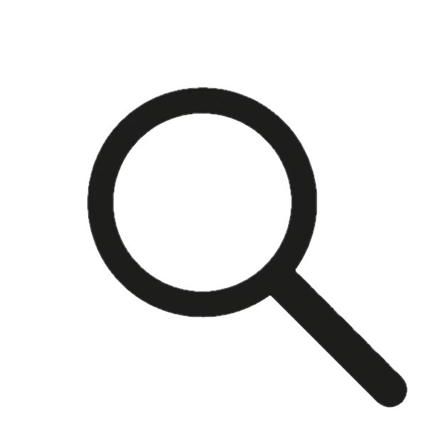

Name: Bean
Birthday: May 24, 2025
Address: 58 Under the Telescope, Basement, NJ
Favorite activities: Chasing brother, sleeping, light-speed running, climbing curtains, eating stuff off the floor and demolishing toys
Breed: Tuxedo
Personality: sweet, badass, cuddly and curious
Nicknames: Queen Bean, Big Girl, Teen Bean, Beanie Baby, Queenie, MagnifiQueen, Beanie Girl, Baked Bean and Queen Teen Bean
Favorite sleeping spot: Under the telescope
Favored hidey hole: The cardboard box tunnel next to the telescope
Hidey hole status: Cat obtainable
Health: Moderate
Health condition: UTI
Cuteness level: ∞∞
Bean is a tuxedo who loves to play and eat stuff off the floor. She was born on May 24, 2025. Some of her nicknames are Teen Bean, Baked Bean, Queen Bean and Teen Queen Bean. She's super sweet, curious and cuddly. One of her favorite spots to sleep is under the telescope in the basement and her favored hidey hole is conveniently right next to it, being the cardboard box tunnel. She is still obtainable while in her hidey hole due to the cardboard box I placed in the tunnel. She also currently has a UTI.
Name: Bean
Birthday: May 24, 2025
Address: 58 Under the Telescope, Basement, NJ
Favorite activities: Chasing brother, sleeping, light-speed running, climbing curtains, eating stuff off the floor and demolishing toys
Breed: Tuxedo
Personality: sweet, badass, cuddly and curious
Nicknames: Queen Bean, Baked Bean, Teen Bean, Beanie Baby, Queenie, MagnifiQueen, Beanie Girl, Big Girl and Queen Teen Bean
Favorite sleeping spot: Under the telescope
Favored hidey hole: The cardboard box tunnel next to the telescope
Hidey hole status: Cat obtainable
Health: Moderate
Health condition: UTI
Cuteness level: ∞∞
Bean is a luscious tuxedo who loves to play and eat stuff off the floor. She was born on May 24, 2025. She's super sweet, curious, cuddly and pretty badass at times. Some of her nicknames are Teen Bean, Baked Bean, Queen Bean and Teen Queen Bean. One of her favorite spots to sleep is under the telescope in the basement and her favored hidey hole is conveniently right next to it, being the cardboard box tunnel. She is still obtainable while in her hidey hole due to the cardboard box I placed in the tunnel. As a kitten, she almost died many times. She also currently has a UTI.